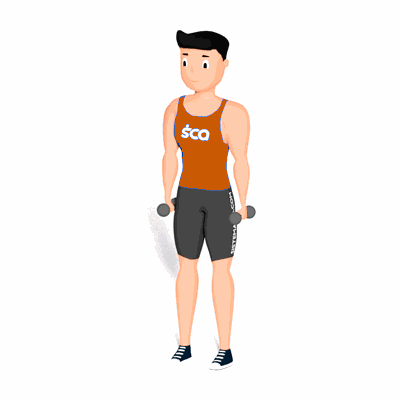

Elevação Lateral e Frontal Conjugada

O exercício tem como objetivo trabalhar o fortalecimento dos ombros, tendo como benefício a prevenção de lesões na região e melhora da postura.
Ficha Técnica
Tipo: Musculação
Grupo Muscular: Ombro
Aparelho: Nenhum
Músculos: Nenhum
Como realizar
- De pé ou sentado em um banco, segurar um par de halteres ao lado do corpo;
- Com o os braços, levemente flexionados, efetuar a abdução de ombros, elevando os braços até alcançar um ângulo de 90 graus;
- Agora, leve os halteres a frente do corpo e então desça até a posição inicial mantendo a palma das mãos voltada para trás;
- Em seguida, inicie um movimento frontal com flexão de ombros, elevando os braços até estes estarem paralelos ao solo;
- Agora, leve os halteres ao lado do corpo e então desça até a posição inicial mantendo a palma das mãos voltada para o corpo;
- Repita os movimentos pela qualidade de vezes determinada pelo professor(a).
 RC STORE
RC STORE